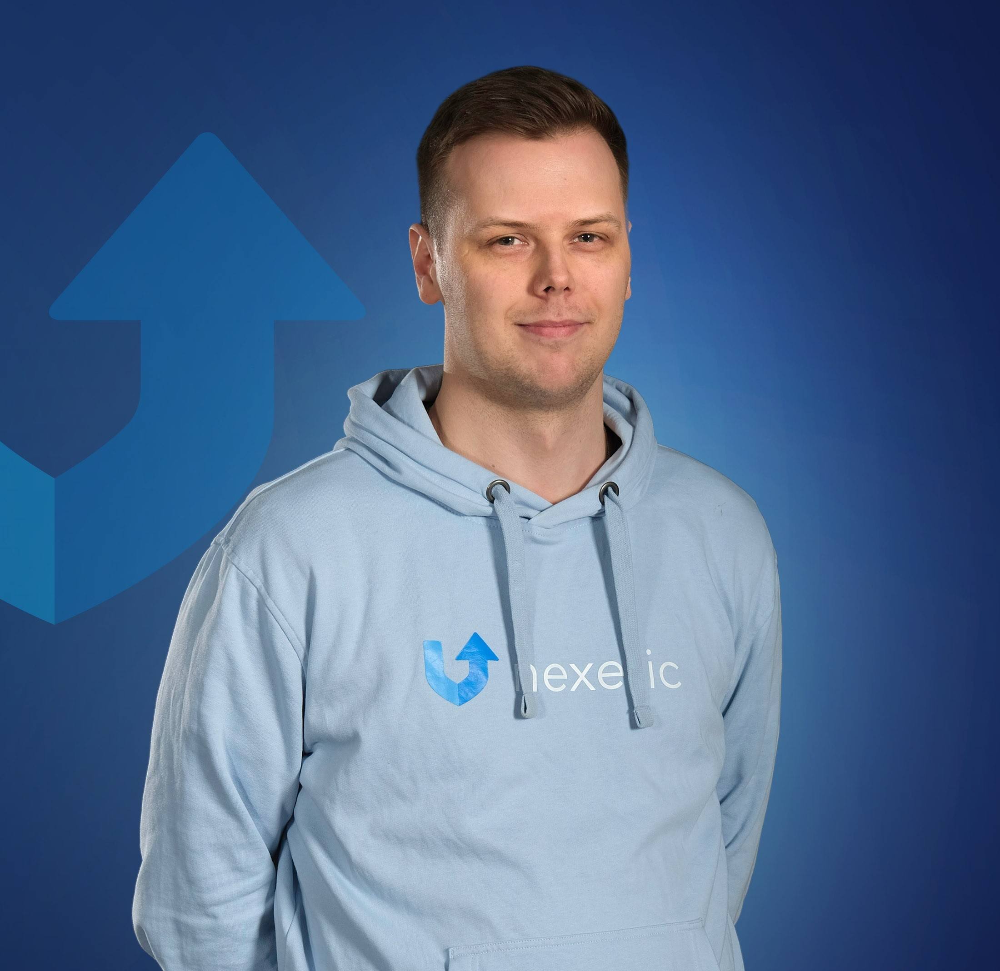

01
Full stack development
Connecting the dots between intuitive interfaces, dependable APIs and the data behind them.
FULL STACK DEVELOPER · FINLAND
Hey, I’m Toni
I turn complex problems into reliable software and clean web experiences.

01 / A LITTLE ABOUT ME
I’m a Full Stack Developer & System Specialist at Nexetic , working at the intersection of development, cloud infrastructure and quality.
My path has taken me from technical support to building test automation from scratch, and on to shipping production features. I enjoy understanding the whole picture and making the details work.
Along the way, I’m growing my developer capabilities and finishing my Bachelor of IT degree. Always learning. Always building.
More about my journey02 / WHAT I BRING TO THE TABLE
A practical toolkit.
A thoughtful approach.
Connecting the dots between intuitive interfaces, dependable APIs and the data behind them.
Working with cloud resources and Microsoft services to make connected systems run smoothly.
Building confidence into software with test automation and a mindset shaped by real customer needs.
03 / THE JOURNEY SO FAR
Different roles. One common thread:
making things work better.
Building production features with .NET and Azure, and collaborating across product, support and R&D.
Espoo, FinlandBuilt the company’s test automation solution from scratch. Owned technical support before onboarding a replacement.
Espoo, FinlandSMALL BUSINESS, BIG IDEAS
I also build clean, responsive websites for small and mid-sized businesses. Thoughtful design, mobile-friendly layouts and the SEO essentials.
Let’s build your website04 / SAY HELLO
Have a project in mind, a question, or just want to connect?
I’d love to hear from you.